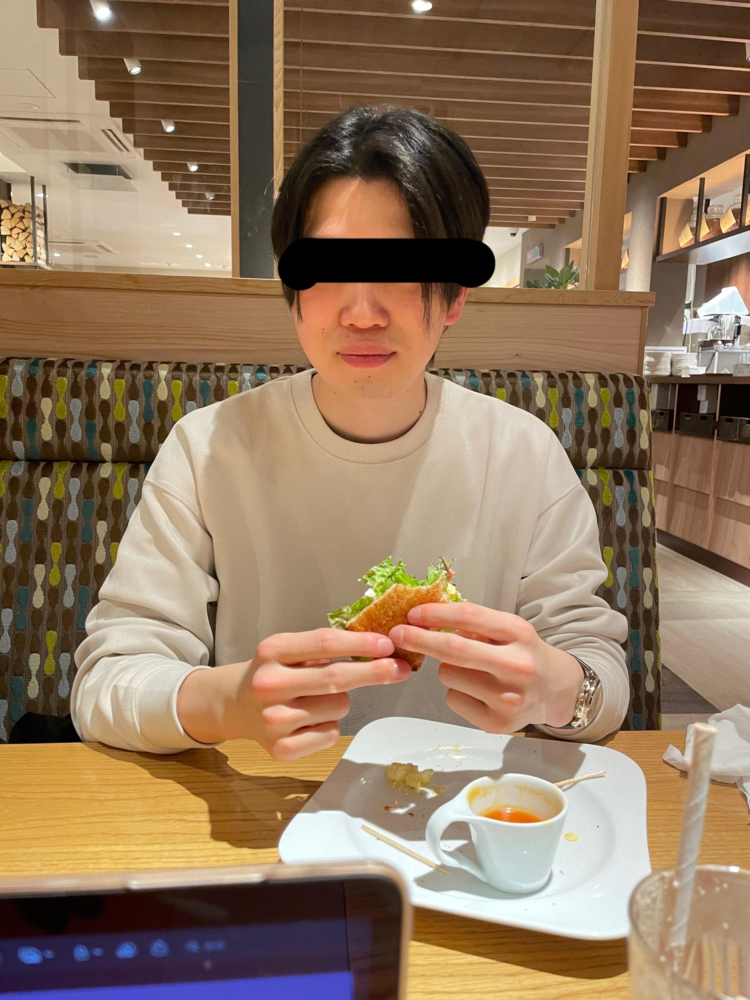

自己紹介をお願いします。
とある社員

高卒工場の椎名裕康です。今年は国家資格の中小企業診断士を取り、
動画編集とマーケティングの技術を身につけ、来年の飛躍を確実なものにさせます。
なるほど、どうやら普通の人とは大きくかけ離れた経歴をお持ちのようです(笑)。
では、次の質問に移ります。
夢や目標はありますか。
ほとんどの人がたどり着けない世界に行くこと、見ることです。
1つ目はマクラーレンに乗ること。
2つ目は宇宙を体感すること。
3つ目は夢や目標を持ち続けて、死ぬまで叶え続けることです。
素敵な夢ですね。是非叶えてほしいものです。
では、最後です。
これから入ってくる新入社員に一言お願いします。
お前らは社会に出たばかりの無価値なゴミだ。
しかし、価値のある人間になれ。
自分を理解し、未来を想像し、いるものを全力で手に入れ、他は削ぎ落とせ。
恐るな、立ち止まるな。
自分を洗練させていけ。
あ、、アリガトウゴザイマシタ〜。。